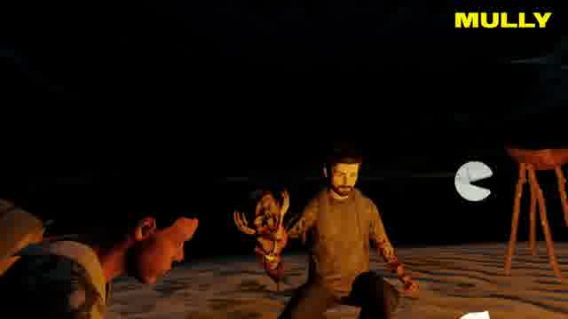
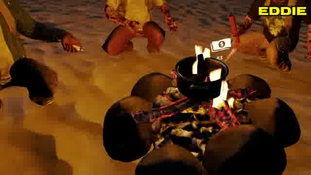
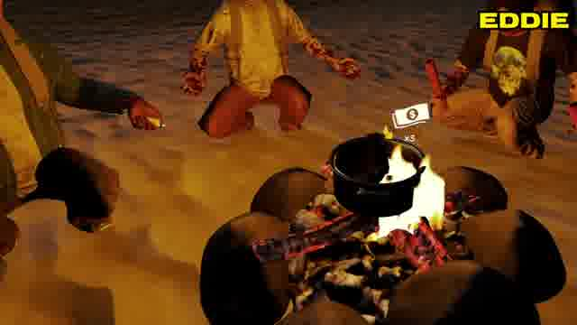
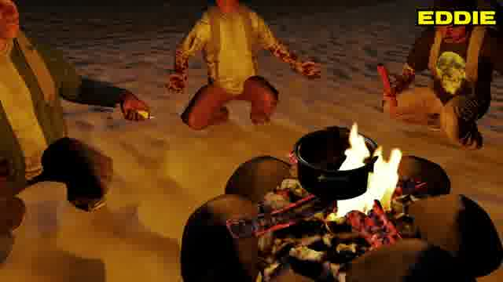
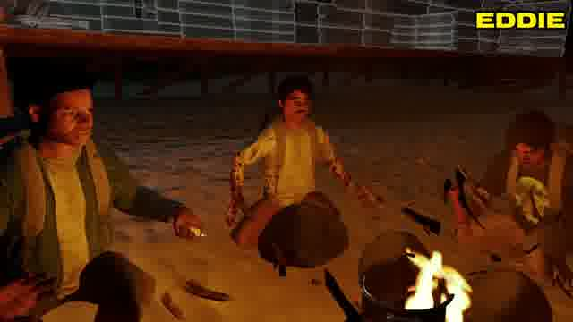

Sub-millisecond visual inspection of 6-DoF spatial UI affordances, precision hand/controller triggers, billboard projection physics, and destruction state handoffs extracted from The Forest VR (37:18 – 37:22 / 2238s – 2242s).
In Virtual Reality and Spatial Computing, UI affordances must balance visibility against motion sickness and visual obstruction. By providing this dual synchronized viewer—featuring both an HTML5 progressive video player and a 30 FPS sequential frame scrubber—analysts can observe how contextual billboards orient to the observer's HMD, test how unlit emissive shaders prevent flame washout, and track how atomic controller triggers hand off directly to physicalized destruction rigidbodies.
Mully HMD viewpoint. Spatial radial dwell dial positioned on the wooden drying rack collider indicating active raycast targeting.
(Δx: 0.0m, Δy: +0.35m, Δz: 0.0m). A constrained yaw-billboard transformation matrix continuously re-orients the quad normal vector toward the observer's HMD camera position (LookAt(HMD.position, Vector3.up)), eliminating perspective shearing during rapid head rotation.v_radial ≈ 3.5 - 6.0 m/s) and angular tumble (ω ≈ 180 - 720 deg/s) erupting outward across the viewport.DORMANT_COLLIDER ➔ ACTIVE_AFFORDANCE ➔ TRIGGER_COMMIT ➔ DESTROYED.



